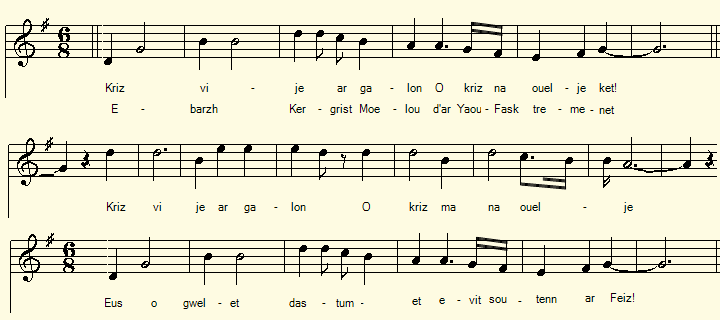

|
A propos de la mélodie C'est celle qui accompagne le chant "Les Ligueurs" dans le Barzhaz de 1845. A propos du texte On trouvera des explications à la page Ar re unanet |
About the tune It is the vehicle of the song "The League men" in the Barzhaz of 1845. About the lyrics Explanations will be found on the page Ar re unanet |
|
p.188 Les Catholiques de Kergrist-Moëlou [1] 4. Kriz vije ar galon ha kriz nep na ouelje ket, E-barzh Kergrist-Moeloù, d'ar Yaou-Fask tremenet, Kriz vije ar galon ha kriz ma na ouelje Eus o gwel't dastumet evit soutenn ar Feiz. 5. Na poent o vonet kuit, a zo aet dan iliz Lar keno da Zant Per, koulz ha deoc'h Aotrou Krist, Hag o tont d'eus an iliz nem stouont er vered - Arsa ta, Kergrist Moelou, setu ho soudarded . 6. Na soudarded ar vro, o vonet d'ar brezel, N'eus ar gentañ stourmad e-lec'h ma nem gavent, Vit soutenn ar gwir feiz rak an heretiked Pedomp an Aotrou Doue, mo dalcho er yec'hed! 9. Pa oant e Kergrist Moelou o vonet gant an hent, E klev'nt kleier Mari o son an ofer'nn bred, Ha 'distront war o c'hiz hag a lar en ur mouez: - Kenavo, kleier, Mari, kleier ar Verc'hez. 10. Kenavo kloc'h Mari, kloc'h ar zant benniget Aliez demeus a vez ni hon-eus ho prallet, Ra blijo gant Doue hag ar Verhez santel Ma ho pralefemp-ni c'hoazh, pa vo fin dar brezel. 11A. Pa oant e Sant Houarno, o fonet gant an hent Demeus a greiz o c'halon a bedont an holl sent, Ha Mari ar barrez, Itron Varia Faouenn, Maria Wir Sikour, d'hon pellaat d'eus poan. 11B. Pa oa e Sant Briek war paveoù Sant Dik Ofisourien ar Roue kristenien katolik: - Ofisourien ar Roue, d'eus ar ger a Rostren, : Kasit hon gourc'h'mennoù, dan Aotrou Doyen! 11C. Ofisourien ar Roue, d'eus ar ger a Rostren, Kasit hon gourc'h'mennoù, dan Aotrou Doyen. - Vit ma helimp, sammet, monet en-dro d'ar vro Dalc'hit soñj ac'hanomp e-barzh ho pedennoù! - [?] [2] 13. Ar zon-mañ zo bet graet , pa oant o vont en hent Barzh ar bloaz mil seizh kant pe'ar ugent ha pemzek.[?] Hag a zo bet savet war un ton da ganañ. Kanit hi, kozh ha yaouank, da laouenaat ar vro! KLT gant Christian Souchon (c) 2020 |
p.188 Les Catholiques de Kergrist-Moëlou [1] 4. A Kergrist-Moeloù, en ce jeudi de Pâques, Il eût été bien dur le coeur qui n'eût pleuré - Un coeur que la compassion jamais n'affecte - En voyant ces soutiens de la Foi rassemblés. 5. Sur le point de partir, on s'en fut à l'église: En sortant, sur les tombes chacun s'inclina. A Saint Pierre et au Christ-très-saint qu'"adieu" l'on dise! Allons, Kergrist Moelou, les voici tes soldats,. 6. Ces soldats du pays qui s'en vont à la guerre - Hérétiques, tremblez! - défendre la vrai Foi! Cette bataille ne sera pas leur première. Mais la dernière, O Dieu, fais qu'elle ne soit pas! 9. A peine s'étaient-ils éloignés de Kergrist Qu'ils se retournent tous au son du carillon, Tandis qu'à Notre-Dame on célèbre l'office: - Adieu Marie! Adieu mélodieux bourdon! 10. Plaise à Dieu, plaise à la Sainte Vierge Marie, O Bourdon de Marie, Cloche de Tous-les-Saints, Que nous recommencions, cette guerre finie, A vous mettre à sonner nos joies et nos chagrins! 11A. C'est à Saint Houarno que maintenant ils passent Et toujours, du fond du coeur, ils prient tous les Saints: Notre-Dame du Faou, les Vierges des paroisses, Marie de Vrai-Secours, éloignez le chagrin!. 11B. Enfin à Saint-Brieuc, les pavés de Saint-Dic Voient arriver ces gens venus de Rostrenen, - Officiers de l'Armée royale et catholique, Portez notre salut à Monsieur le Doyen! 11C. - Pour que nous transmettions ces paroles aimables Et qu'ensemble puissions parcourir le pays, : A votre tour, soyez des amis véritables: Pensez à nous dans vos prières, vous aussi! -[2] 13. Que ce chant que firent des gars de Cornouaille En l'an mille sept cent quatre-vingt quinze [?], en choeur Soit repris, que cet air entrainant partout aille- A tous, jeunes et vieux, mettre du baume au coeur! Traduction Christian Souchon (c) 2020 |
p.188 The Catholics of Kergrist-Moëlou [1] 4. Cruel indeed the heart that would not have then wept In Kergrist-Moeloù, on this Easter Thursday, The soul that of its peace would not have felt bereft, On seeing the defenders of the Faith go away. 5. On the point of leaving, to church all of them went To say goodbye to Saint Peter and our Lord Christ. On leaving the church over the tombstones they bent - - Those all are your soldiers! Don't forget them, Kergrist! 6. Soldiers of the country who are going to war It will not be the first battle you have to fight You'll defend the true Faith that heretics abhor May God help you as long as you do what is right! 9. On the road, barely far from Kergrist-Moëlou They hear Our-Lady's bell aringing for high mass. They turn their heads and say with one voice, full of woe: - Farewell, farewell the bell of Mary the All-Blessed! 10. You, bell of the Virgin and you, bell of All-Saints That we swung in the past so oft, your true lovers, May God and Mary help that nothing may prevent Us to do it again, once this war is over. 11A. Continuing on their way then at Saint-Houarno, From the bottom of their hearts they pray to all Saints Mary of their parish, Our-Lady of Le Faou, That they may all be spared by disease and complaints!. 11B. At last in Saint-Brieuc, on Saint-Dic cobblestones Catholics and Christians stood, the King's officers - Ye King's officers who from Rostrenen has come, Forward our best greetings to your dean and chapter! 11C. - Ye King's officers who from Rostrenen has come, Forward our best greetings to your dean and chapter! - Remind us in your prayers, whenever you say them So that we may go on travelling together! -[2] - 13. This song was made by lads as they were on their way In one thousand seven hundred and ninety-five [?] Made to a catchy tune devised to hold at bay Sadness. Now sing it all! to keep your joy alive! |
|
[1] Chouans, Ligueurs et Normands Si cette pièce est indibutablement un chant de soldats chrétiens et catholiques, on peut douter qu'il sagisse d'une "Chanson des Catholiques sous la Ligue", du moins pour ce qui concerne le texte original (ou supposé tel, hors les lignes qui semblent intercalées, les surcharges et les ajouts en marge) qui va de la 2ème moitié de la p. 188 au haut de la page 190. Là débute une autre gwerz intiulée "An intañvez paour", "La pauvre veuve". Le présent chant, quant à lui, fait irrésistiblement penser, par son sujet éminemment religieux et par son allure générale, à un chant tel que L'hymne des Chouans qu'on attribuerait volontiers à l'ancien séminariste Guillaume Le Guern de Kerbleizec. Il pourrait avoir trait à l'envoi d'un détachement de soldats chouans du secteur de Kergrisr-Moëlou -Rostrenen- St Houarno (Haute-Cornouaille) à Saint-Brieuc en 1795, en renfort de l'Armée Royale et Catholique, si du moins on interprète bien la date surchargée en "1592" incrite en bas de la page 189. A la page 193 / 110 commence un chant qui semble bien distinct de la présente gwerz, même si la Villemarqué l'intitule "Chant des Catholiques (variantes)". Il comporte dans le corps du texte plusieurs surcharges à l'encre plus foncée qui visent certainement à justifier la datation qu'en fait le collecteur. La Villemarqué suppose que le sujet en est "probablement la Bataille de Craon en 1592", comme il l'indique en marge de la page 194, ainsi que par des références aux "Mémoires" du chanoine Jean Moreau (1552-1617) dans la marge de la page précédente. C'est plausible, car on lit à la 13ème ligne de ladite page: "Nemet Pennoù-Boull Bro soz ha bro spagn ha bro chall" Ce pannel d'ennemis ("casques ronds d'Angleterre, d'Espagne et de France") semble bien se référer à la Ligue et cette mention est d'autant plus crédible qu'on ne la retrouve pas sous cette forme dans le Barzhaz. En effet, 3 lignes plus haut, un nouveau titre est inséré : "Bataille d'Alain B. Torte". Pourtant les vers qui précèdent et suivent ce titre ont la même structure (vers de 13 pieds) et le chant se termine en bas de la page 194 de la même façon que la présente gwerz:: "A c'han-mañ zo savet abaoe ma en hent" ( Ce chant a été composé depuis qu'ils ont pris la route). La Villemarqué pourrait donc avoir "détourné" cette douzaine de vers d'un chant sur la Bataille de Craon pour en faire un autre à la gloire d'Alain Barbe-Torte (910 - 952) victorieux des Normands, en les faisant précéder de la pitoresque "Chanson du Renard" notée en bas de la page opposée, p. 195 / 112. [2] Les strophes manquantes Dans le chant du Barzhaz, les Ligueurs, les cloches de Kergrist-Moëlou vers qui vont les adieux des soldats dont remplacées par celles de Duhaut strophes 9 et 10, une transformation que des surcharges (Kallak, Duhot) annoncent dans le manuscrit. Par ailleurs, La Villemarqué emprunte au chant de la page 193 la strophe 11 qui évoque la traditionnelle bataille des bannières du Pardon de Saint-Servais (entre Duault et Callac). En revanche, il escamote les strophes 11 A, 11 B et 11C qui déplacent la scène à Saint-Houarno (à côté de Guéméné sur Scorff), puis à Saint Brieuc. Ces modifications sont imposées par la logique interne de sa narration dont le te thème est la bataille de Craon relatée par le chanoine Moreau. A la strophe 11C, les habitants de Saint-Brieuc s'entretiennent, semble-t-il, avec les officiers du détachement de Haute-Cornouaille plutôt qu'avec les simples soldats, peut-être parce que ces derniers ignorent le français, seule langue parlée dans cette ville. |
[1] Chouans, League men and Normans If this piece is undoubtedly a song of Christian and Catholic soldiers, one can doubt that it is a "Song of the Catholics in the League times" , at least as regards the assumed original text (which excludes apparently interspersed lines, overloads and additions in margin) that goes from the 2nd half of page 188 to the top of page 190. There begins another gwerz entitled "An intañvez paour" , i.e. "The poor widow". As for the present song, it irresistibly makes one think, by its eminently religious subject and by its general appearance, of a song such as The Chouans hymn that we would readily attribute for instance to the former seminarian Guillaume Le Guern de Kerbleizec. It could relate to the sending of a troop of Chouan soldiers from the sector of Kergrisr-Moëlou -Reostrenen- St Houarno (Upper-Cornouaille) to the remote main town Saint-Brieuc in 1795, in reinforcement of the Royal and Catholic Army, if we don't misinterpret the date overwritten as "1592" at the bottom of page 189. On page 193/110 begins a song which seems quite distinct from the present gwerz, even if the Villemarqué titles it "Song of the Catholics (variants)" . It includes in the body of the text several alterations in darker ink which certainly aim to justify the dating made by the collector. La Villemarqué supposes that the subject is "probably the Battle of Craon in 1592 ", as stated by a hint in the margin of page 194, as well as by references to the "Mémoires" of Canon Jean Moreau (1552-1617) in the margin of the previous page. This is plausible, because we read in the 13th line of the said page: "Nemet Pennoù-Boull Bro soz ha bro spagn ha bro chall" This panel of enemies ("Bowl helmeted soldiers from England, Spain and France") seems to refer to the League and this mention is all the more credible, as it is not found in this form in the Barzhaz . Indeed, 3 lines above, a new title is inserted: "Bataille d'Alain B. Torte" . Yet the verses that precede and follow this title have the same structure (13 foot verses) and the song ends at the bottom of page 194 in the same way as the present gwerz :: "A c'han-mañ zo savet abaoe ma en hent " (This song has been composed since they hit the road). La Villemarqué could therefore have "diverted" this dozen of verses from a song on the Battle of Craon to make another to the glory of Alan Twisted-Beard (910 - 952) who was victorious over the Normans, by preceding them with the pitoresque "Song of the Fox" noted at the bottom of the opposite page, p. 195 / 112. [2] The missing stanzas In the Barzhaz song, "the League", the bells of Kergrist-Moëlou greeted on leaving by the soldiers, are replaced by those of Duhaut stanzas 9 and 10, a transformation that overloaded placenames (Kallak, Duhot) announce in the manuscript. In addition, La Villemarqué borrows from the song on page 193 strophe 11 which evokes the traditional battle of banners on which the Pardon celebration at Saint-Servais (located between Duault and Callac) used to close. On the other hand, he leaves out stanzas 11 A, 11 B and 11C which move the stage to Saint-Houarno (next to Guéméné- sur-Scorff), then to Saint Brieuc. These modifications are imposed by the internal logic of his narrative, the theme of which is the battle of Craon such as recounted by Canon Moreau. In stanza 11C, the inhabitants of Saint-Brieuc talk, it seems, with the officers of the Haute-Cornouaille detachment rather than with ordinary soldiers, perhaps because the latter do not speak French, the only language spoken in this city. |